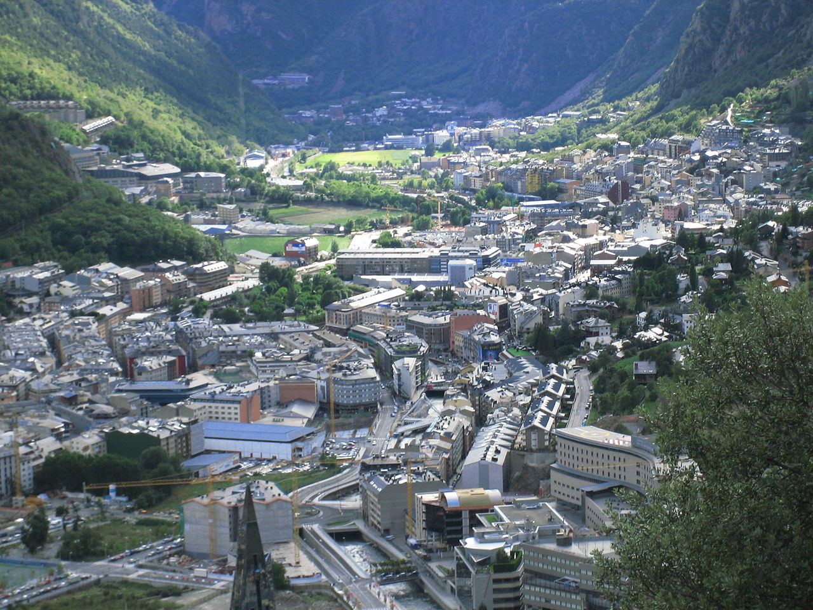

Andorra la Vella
- Casa de la Vall
-
Avenida Meritxell
- Rec del Solà

La arteria principal de Andorra la Vella, es su avenida comercial. Andorra la Vella es tiendas, muchas tiendas, entre las cuales podrás encontrar las marcas más prestigiosas como por ejemplo
la tienda de Rolex entre otras. Andorra la Vella es restaurantes espectaculares, y muchas perfumerías, ópticas, farmacias y bazares de electrónica, pero cuidado con estos últimos!
Desconfiad de las tiendas que no tienen etiquetados sus precios en los artículos, ya que su modus operandi es más propio del zoco de Marrakech que de una capital europea, y jamás saldréis con un precio justo.
Para el resto, un viaje a Andorra méramente para hacer compras más baratas no sale a cuenta, pero si estáis en Andorra por otros motivos, y de paso encontráis un producto que os interesa, aquí suele salir un poco más barato por la casi ausencia de
impuestos en Andorra. Tiendas como Zara por ejemplo, tienen en sus etiquetas marcados los precios para España, y los precios para Andorra, para que veáis la diferencia (que no es TANTA...).
Dicho esto, mucha suerte a los cazadores de gangas que estén leyendo!